Chapter 1: QML Foundations¶
Quantum machine learning sits where quantum computing meets machine learning. This chapter gives you the shared language: the four quadrants of classical and quantum data and algorithms, a quantum refresher for ML people and an ML refresher for physicists, the maths toolkit, NISQ versus fault-tolerant hardware, complexity and classical simulation as yardsticks, a history from HHL to today's honest benchmarks, the map of model families, the end-to-end workflow, and a checklist for separating hype from evidence.
1.1 What Quantum Machine Learning Is (and Is Not)¶
Quantum machine learning (QML) is the study of how quantum computers and machine learning can help each other. Mostly it means using a small quantum circuit as part of a learning model — the circuit turns data into a quantum state, gets nudged by trainable knobs, and is measured to produce a prediction. It also covers using ordinary machine learning to understand quantum systems.
Think of it like…
Think of a quantum circuit as an unusual new kind of lens in a camera. Machine learning is still the photographer; QML asks whether swapping in this strange lens ever gives a sharper picture — and for which scenes.
Real-world example
Amara, a data-science student at the fictional Lakeside University, takes 200 labelled sensor readings, squeezes each into 4 numbers, feeds them into rotation angles on 4 simulated qubits, adds 24 trainable rotations, and measures one qubit to output 'faulty' or 'healthy'. A classical optimiser tunes the 24 angles until the training loss stops falling.
How it works¶
- Start from a learning task: classify, regress, cluster, generate, or learn about a physical system.
- Encode the input data into a quantum state with a feature map (rotation angles, amplitudes, or a Hamiltonian).
- Process the state with a circuit — fixed (kernel methods) or with trainable parameters (variational models).
- Measure many times ('shots') to estimate expectation values that become predictions or kernel entries.
- Train with a classical optimiser and compare honestly against strong classical baselines.
Who uses it
Researchers in universities and quantum companies, quantum software engineers, and data scientists in finance, pharma and energy who evaluate quantum methods meet QML.
Key takeaway
In interviews define QML as 'machine learning where some part of the model or data is quantum' and immediately add that no practical advantage on classical data has yet been demonstrated.
Going deeper
- Most current QML research uses circuits of 2-30 qubits simulated on laptops or GPUs; hardware experiments typically use tens of qubits with shallow depth because noise accumulates with every gate.
- Two broad families dominate: variational models with trainable gates, and kernel methods with fixed circuits; Schuld (2021) showed many variational models can be rewritten as kernel methods.
- A model's output is an expectation value ⟨ψ(x,θ)|O|ψ(x,θ)⟩, a number between the smallest and largest eigenvalue of the observable O, for example between -1 and +1 for Pauli-Z.
- Estimating an expectation to precision ε needs roughly 1/ε² shots: about 10,000 shots for ±0.01, which makes each training step slow and costly on real hardware.
- The field also includes learning about quantum data — states made by experiments or sensors — where provable exponential advantages exist (Huang et al., Science 2022).
Common mistakes & misconceptions
- Thinking QML means 'running a neural network on a quantum computer': most models are small hybrid circuits trained by classical optimisers.
- Assuming quantum means faster: on classical data no practical speed-up or accuracy gain has been convincingly shown as of 2026.
- Treating a simulator result as a quantum result: simulations of 20 qubits prove the idea works mathematically, not that hardware will match it.
Try it: A minimal quantum model in PennyLane (pip install pennylane)¶
import pennylane as qml
from pennylane import numpy as np
dev = qml.device('default.qubit', wires=2)
@qml.qnode(dev)
def model(x, theta):
qml.RY(x[0], wires=0); qml.RY(x[1], wires=1) # encode
qml.CNOT(wires=[0, 1])
qml.RY(theta[0], wires=0); qml.RY(theta[1], wires=1) # trainable
return qml.expval(qml.PauliZ(0))
print(model(np.array([0.3, 1.2]), np.array([0.1, -0.4])))
Key algorithms, circuits, techniques, tools & papers¶
| Name | What it does | Example |
|---|---|---|
| Quantum machine learning (QML) Field at the intersection of quantum computing and ML · Concept · Emerging · Beginner |
Using quantum computers inside learning algorithms, or using learning algorithms to study quantum systems and data. | A bank's research team tests whether a 6-qubit quantum classifier spots fraudulent transactions as well as gradient-boosted trees. |
| Quantum model General term (Schuld & Petruccione textbooks) · Concept · Current · Beginner |
A function from data to predictions computed by preparing a data-dependent quantum state and measuring an observable. | f(x) = expectation of Pauli-Z on qubit 0 after encoding x and applying a trained circuit; sign(f) gives the class. |
| Feature map / embedding Core QML building block · Encoding · Current · Beginner |
The circuit that turns a classical data point x into a quantum state; covered in depth in the encoding chapter. | Each of four features becomes the angle of an RY rotation on its own qubit. |
| Variational (parameterised) circuit Trainable circuit family · Ansatz · Current · Beginner |
A circuit with adjustable rotation angles that a classical optimiser tunes to minimise a loss, much like neural-network weights. | A 4-qubit, 3-layer circuit with 36 angles is trained to separate two moon-shaped clusters. |
| Hybrid quantum-classical loop Standard NISQ-era workflow · Technique · Current · Beginner |
The quantum device evaluates the model; a classical computer computes loss, gradients and parameter updates; repeat. | A laptop runs Adam while a cloud quantum processor returns 1,000-shot expectation values for each update step. |
| Quantum kernel method Havlíček et al. 2019; Schuld & Killoran 2019 · Algorithm · Current · Intermediate |
Uses a quantum circuit to compute similarities between data points, then trains a classical support vector machine on them. | A 100-point dataset needs 4,950 pairwise circuit runs to fill the symmetric kernel matrix for an SVM. |
| Fault-tolerant QML algorithms HHL lineage (2009 onwards) · Algorithm · Research · Advanced |
Algorithms such as quantum linear-system solvers that promise large speed-ups but need error-corrected machines and strong assumptions. | A future error-corrected computer might invert a well-conditioned sparse matrix for regression, if data loading and readout are cheap. |
| ML for quantum Reverse direction of QML · Concept · Current · Beginner |
Classical machine learning applied to quantum problems: decoding errors, calibrating qubits, reconstructing states. | A neural network learns to decode surface-code syndromes faster than a hand-written decoder. |
| Quantum-inspired algorithm Grew from dequantisation research (Tang 2018) · Algorithm · Current · Intermediate |
A classical algorithm built from ideas first developed for quantum ones, such as sampling-based low-rank methods or tensor networks. | A retailer runs a tensor-network classifier on ordinary GPUs after reading QML papers. |
| Biamonte et al. 2017 'Quantum machine learning' Nature 549, 195 (2017) · Paper · Current · Beginner |
Widely cited review that framed the field and its early speed-up claims, many later qualified by dequantisation and loading costs. | A reading group starts with this review, then reads Aaronson's 'Read the fine print' for the caveats. |
| Aaronson 2015 'Read the fine print' Nature Physics 11, 291 (2015) · Paper · Current · Beginner |
Short commentary listing the hidden assumptions behind quantum linear-algebra speed-ups: input loading, sparsity, conditioning and output readout. | Before believing an exponential-speed-up headline, a student checks each of Aaronson's four caveats. |
| Schuld & Petruccione textbook Springer: 2018 'Supervised Learning with Quantum Computers'; 2021 2nd ed. 'Machine Learning with Quantum Computers' · Resource · Current · Intermediate |
Standard textbook on QML from a supervised-learning viewpoint, covering encodings, variational models and kernels. | A master's course assigns chapters on data encoding and quantum models as weekly reading. |
1.2 The Four Quadrants: CC, CQ, QC and QQ¶
QML is often drawn as a 2×2 grid. One axis asks whether the data is classical (C) or quantum (Q); the other asks whether the algorithm runs on a classical (C) or quantum (Q) computer. The four boxes — CC, CQ, QC and QQ — help you say precisely which kind of 'quantum machine learning' someone means.
The four QML quadrants
| Classical algorithm | Quantum algorithm | |
|---|---|---|
| Classical data | CC: ordinary & quantum-inspired ML | CQ: circuits on images, tables |
| Quantum data | QC: ML for decoding, calibration | QQ: learning directly from states |
| Proven advantage? | n/a (baseline) | CQ: contrived only; QQ: yes |
| Typical demo | AlphaQubit-style decoder (QC) | Kernel SVM on 8 features (CQ) |
First letter = data, second letter = algorithm; evidence for advantage is strongest in QQ.
Think of it like…
Picture a kitchen: the ingredients are either ordinary (classical data) or exotic (quantum data), and the cook either uses a normal oven (classical algorithm) or an experimental one (quantum algorithm). Each pairing is a different recipe category.
Real-world example
At the fictional Northfield Quantum Lab, Dev classifies handwritten digits with a quantum circuit (CQ), his colleague Lin trains a neural network to calibrate qubits (QC), and their professor studies learning directly from states produced by a quantum sensor (QQ). The CC corner is ordinary ML — including quantum-inspired algorithms.
How it works¶
- Ask: where does the data come from — a database or file (classical), or a quantum system's state (quantum)?
- Ask: what processes it — CPUs/GPUs (classical) or a quantum processor (quantum)?
- Place the work in a box: first letter = data, second letter = algorithm (the common convention).
- Use the box to judge claims: CQ advantages are the hardest to prove; QQ advantages are the best established.
Who uses it
Lecturers, review authors and interviewers use this grid to frame QML discussions and research proposals.
Key takeaway
Memorise the convention: first letter is the data type, second is the device — 'CQ' means classical data, quantum algorithm (some authors reverse it, so always say it out loud).
Going deeper
- The grid appears in Schuld & Petruccione's textbooks and in many surveys; some authors write the algorithm first, so 'QC' can mean either direction — always define the convention.
- CQ faces the input problem: n classical numbers need at least about n gate parameters to load, so loading time can cancel any quantum speed-up on the processing step.
- QQ advantages are rigorous: Huang, Kueng and Preskill (2021) and Huang et al. (2022) proved exponential separations in the number of experiments needed when quantum memory is available.
- QC is commercially the most mature quadrant in 2026: neural decoders, automated calibration and ML-based state tomography are used on real quantum hardware.
- Provable CQ speed-ups exist only for constructed problems, such as the discrete-logarithm-based task of Liu, Arunachalam and Temme (Nature Physics 2021).
Common mistakes & misconceptions
- Using 'QML' to mean only CQ: half the field (QC and QQ) is about quantum data, where the strongest results live.
- Assuming CQ results transfer to QQ or vice versa: proven advantages for quantum data say nothing about classifying photos.
- Forgetting CC baselines: every CQ claim must be compared with classical and quantum-inspired classical methods.
Key algorithms, circuits, techniques, tools & papers¶
| Name | What it does | Example |
|---|---|---|
| CC — classical data, classical algorithm Quadrant taxonomy · Concept · Current · Beginner |
Ordinary machine learning, plus quantum-inspired classical algorithms such as tensor networks or dequantised sampling methods. | A tensor-network model trained on MNIST using PyTorch on a GPU sits in CC. |
| CQ — classical data, quantum algorithm Quadrant taxonomy · Concept · Emerging · Beginner |
The best-known QML: loading classical data such as images or tables into circuits; advantage here is unproven in practice. | Encoding 8 PCA features of a credit-card transaction into 8 qubits and classifying fraud. |
| QC — quantum data, classical algorithm Quadrant taxonomy · Concept · Current · Beginner |
Classical ML used to analyse measurements of quantum systems or to control quantum hardware. | Google DeepMind's AlphaQubit decoder (2024) is a neural network trained on syndrome data from quantum chips. |
| QQ — quantum data, quantum algorithm Quadrant taxonomy · Concept · Research · Intermediate |
A quantum computer learns directly from quantum states, without converting them to classical bits first; strongest proven advantages. | Huang et al. (Science 2022) showed learning properties of quantum states with exponentially fewer experiments when states are stored and processed quantumly. |
| Aïmeur, Brassard & Gambs 2006 Canadian AI conference 2006 · Paper · Legacy · Intermediate |
Early paper often credited with classifying learning by classical or quantum data and processing, the root of the four-quadrant picture. | A literature review cites this paper when introducing the CC/CQ/QC/QQ grid. |
| Data type axis Quadrant taxonomy · Concept · Current · Beginner |
Classical data is bits in files; quantum data is the state of a physical quantum system, which cannot simply be copied. | A spreadsheet of house prices is classical; the output state of a molecule simulation circuit is quantum. |
| Algorithm type axis Quadrant taxonomy · Concept · Current · Beginner |
Whether the learning computation itself runs on classical hardware or uses a quantum processor for some step. | Training a kernel SVM is classical, but computing its kernel entries on a QPU puts the work in CQ. |
| No-cloning theorem Wootters & Zurek; Dieks (1982) · Theorem · Current · Beginner |
An unknown quantum state cannot be copied, so quantum data must be used carefully and cannot be backed up like a file. | A QQ learner cannot duplicate a sensor's output state to measure it two ways; it needs fresh copies. |
| Quantum-inspired classical ML CC quadrant (e.g. Tang 2018; tensor networks) · Algorithm · Current · Intermediate |
Classical methods borrowed from quantum ideas that often match the quantum algorithms they mimic, removing claimed speed-ups. | Ewin Tang's 2018 sampling algorithm matched a quantum recommendation algorithm up to polynomial factors. |
| Learning from quantum experiments QQ quadrant (Huang et al., Science 2022) · Concept · Research · Advanced |
Experiments that store the output of a quantum process in quantum memory and process copies jointly to learn faster. | On Google's Sycamore, joint measurement of two copies predicted state properties with far fewer runs than single-copy strategies. |
| ML-assisted quantum control QC quadrant · Technique · Current · Intermediate |
Reinforcement learning or Bayesian optimisation used to tune pulses and calibrations on quantum hardware. | An RL agent finds pulse shapes that raise a two-qubit gate's fidelity from 99.2% to 99.5% overnight. |
| Quantum sensing data QQ/QC inputs from sensors · Dataset · Research · Intermediate |
States produced by quantum sensors such as NV-centre magnetometers or atomic interferometers, a natural source of quantum data. | A future pipeline routes a sensor's entangled probe state straight into a quantum classifier instead of measuring it first. |
1.3 Why People Hope QML Helps — and What Is Genuinely Unknown¶
Researchers hope quantum computers could make learning faster, need less data, or find patterns classical models miss, because quantum states live in enormous mathematical spaces and can represent correlations that are hard to simulate. But hope is not evidence: for typical classical datasets nobody has shown a clear, practical quantum advantage, and some proposed speed-ups were later matched classically.
Claims and evidence
| Hoped-for benefit | Status in 2026 | |
|---|---|---|
| Faster linear algebra | Exponential speed-ups (HHL) | Caveats; many dequantised |
| Less training data | Sample-complexity gains | Proven for quantum data |
| Better models | New inductive biases | No fair benchmark win yet |
| Contrived tasks | Discrete-log learning | Proven, not practical |
| Optimisation | Better training/annealing | Mixed, mostly heuristic |
Rigorous advantages exist mainly for quantum data or contrived problems.
Think of it like…
It is like hearing a new sports shoe 'could' make you run faster: the material is genuinely new, but until athletes beat their own records in fair races, the claim is a hypothesis.
Real-world example
Priya, an analyst at fictional Helix Pharma, is asked whether QML will speed up toxicity prediction. She lists the arguments for (quantum-native chemistry data, possible new inductive biases) and against (loading costs, noise, no benchmark wins yet) and recommends a small, time-boxed study with a strong classical baseline.
How it works¶
- Identify the claimed benefit: speed (runtime), sample efficiency (less data), or model quality (better generalisation).
- Check the assumptions: error-corrected hardware, fast data loading, special data structure.
- Check whether a classical algorithm (including quantum-inspired) achieves the same result.
- Look for evidence: theorems, numerical benchmarks with fair baselines, or hardware experiments.
- Classify the claim as proven, plausible-but-unproven, or refuted (dequantised or beaten).
Who uses it
Technology strategists, research managers and investors need this balanced view before funding QML projects.
Key takeaway
A strong interview answer separates three kinds of advantage — computational speed, sample complexity and model expressivity — and says which are proven for which data.
Going deeper
- Classical models are strong: on small tabular tasks used in QML papers, gradient-boosted trees, SVMs and small MLPs typically reach near-ceiling accuracy, leaving little room for any quantum gain.
- Hilbert-space dimension 2^n gives quantum models a huge feature space, but kernel-concentration and barren-plateau results show that very large spaces often make learning harder, not easier.
- Dequantisation results (Tang 2018; Chia, Gilyén, Li, Lin, Tang and Wang, STOC 2020) show that low-rank linear-algebra speed-ups need either high-rank data or very precise answers to survive.
- Advantages in learning from quantum experiments were demonstrated on hardware with up to about 40 superconducting qubits (Huang et al., Science 2022), so the QQ hope is concrete.
- Most experts in 2026 regard practical CQ advantage as an open question that likely requires fault-tolerant hardware and carefully chosen, structured data.
Common mistakes & misconceptions
- Treating 'exponentially large Hilbert space' as evidence of speed-up: measurement reveals only a few bits per shot.
- Citing old speed-up claims without checking whether they were dequantised or qualified later.
- Concluding QML is 'useless': rigorous advantages exist for quantum data, and the classical-data question is open, not settled negative.
Key algorithms, circuits, techniques, tools & papers¶
| Name | What it does | Example |
|---|---|---|
| Computational (runtime) advantage Learning theory / complexity · Concept · Research · Beginner |
The quantum learner reaches the same accuracy using asymptotically less computation time than any classical learner. | Liu et al. 2021 show a learning task based on discrete logarithms that classical computers cannot solve efficiently, assuming standard cryptographic hardness. |
| Sample-complexity advantage Learning theory · Concept · Research · Intermediate |
The quantum learner needs fewer training examples or experiments; proven exponential gaps exist for learning from quantum data. | Predicting many properties of an unknown state with quantum memory used exponentially fewer copies than measuring each copy separately. |
| Expressivity / inductive-bias hope Heuristic argument · Concept · Research · Intermediate |
The idea that quantum models represent function classes that are natural for some data but costly for classical models. | A physics dataset generated by quantum dynamics might be modelled compactly by a circuit mimicking those dynamics. |
| Quantum-native data argument QQ quadrant motivation · Concept · Research · Beginner |
When data are themselves quantum states, a quantum learner avoids lossy measurement first, a strong reason to expect advantage. | Classifying phases of matter from states prepared on a simulator, without full tomography, suits a quantum classifier. |
| Dequantisation Tang 2018 and successors · Concept · Current · Intermediate |
Showing a classical algorithm with similar sampling access matches a quantum ML algorithm, erasing its claimed exponential speed-up. | Recommendation, low-rank PCA and some regression speed-ups were dequantised between 2018 and 2020. |
| Classical simulability Cerezo et al. 2023/2025 debate · Concept · Research · Advanced |
Many trainable quantum models with good gradients may be efficiently simulable classically, so they offer no quantum advantage. | A model provably free of barren plateaus is shown to live in a small subspace that a laptop can simulate. |
| 'Better than classical?' benchmark Bowles, Ahmed & Schuld 2024 (arXiv:2403.07059) · Paper · Current · Beginner |
Large study testing 12 popular QML models on 160 datasets; out-of-the-box classical models generally won. | Removing entanglement from several quantum models often made no difference or improved results on these small tasks. |
| Heuristic advantage Open question · Concept · Research · Intermediate |
The possibility that quantum models help on real problems without proof, as deep learning succeeded before theory explained it. | Researchers keep running fair benchmarks on larger hardware hoping to spot problems where quantum models win empirically. |
| Liu, Arunachalam & Temme 2021 Nature Physics 17, 1013 (2021) · Paper · Research · Advanced |
Proved a quantum kernel method learns a specially constructed classification problem that is classically hard under a discrete-log assumption. | Cited as proof that CQ advantage is possible in principle, though the dataset is artificial. |
| Power of data (Huang et al. 2021) Nature Communications 12, 2631 (2021) · Paper · Current · Intermediate |
Showed classical ML given training data can often predict quantum-model outputs, and proposed tests and projected kernels for genuine advantage. | A geometric-difference test tells a team whether their quantum kernel could beat classical kernels on their dataset. |
1.4 Quantum Refresher for ML People: Qubits, Gates, Measurement, Shots, Entanglement¶
A qubit is the quantum version of a bit: before you look, it is described by two complex numbers (amplitudes) whose squared sizes give the chances of reading 0 or 1. Gates are reversible operations that rotate these amplitudes; measurement gives a single random bit and destroys the superposition. Because each run gives only one random outcome, you repeat the circuit many times ('shots') and average.
Think of it like…
A qubit is like a spinning coin whose tilt you can steer precisely with gates; looking at it makes it land heads or tails. To learn the tilt you must spin and catch many identical coins and count the results.
Real-world example
Ken prepares one qubit with an RY(π/3) rotation, so P(1) = sin²(π/6) = 0.25. He runs 1,000 shots and gets 262 ones, estimating ⟨Z⟩ = (738 − 262)/1000 = 0.476, close to the true 0.5. With 100 shots his estimate would wobble by about ±0.09.
How it works¶
- Qubits start in |0⟩; the state of n qubits is a vector of 2^n complex amplitudes.
- Single-qubit gates (RX, RY, RZ, H) rotate one qubit; two-qubit gates (CNOT, CZ) create entanglement.
- A circuit is a sequence of gates, mathematically one big unitary matrix applied to the state vector.
- Measurement in the computational basis returns a bitstring with probability |amplitude|².
- Repeat for N shots; average to estimate expectation values such as ⟨Z⟩, with error about 1/√N.
Who uses it
Every QML practitioner, quantum software developer and algorithm engineer uses these concepts daily.
Key takeaway
Remember: n qubits ↔ 2^n amplitudes, but one measurement yields only n bits — and shot noise shrinks only as 1/√shots.
Going deeper
- One-qubit rotation RY(θ) = exp(−iθY/2); a common QML convention is that a feature x enters as an angle, so the model depends on x through sines and cosines of x/2 multiples.
- Standard error of ⟨Z⟩ from N shots is √((1 − ⟨Z⟩²)/N), at most 1/√N: 0.032 for 1,000 shots and 0.01 for 10,000 shots.
- Typical 2025-2026 two-qubit gate fidelities: around 99.9% on leading trapped-ion machines such as Quantinuum Helios (reported 99.921%) and roughly 99.5-99.9% on the best superconducting chips.
- Gates are not free to place: superconducting chips have fixed nearest-neighbour connectivity, so long-range interactions need SWAP gates (3 CNOTs each), inflating depth.
- Holevo's bound (1973) limits what measurement can extract: n qubits can deliver at most n classical bits of information, regardless of the 2^n amplitudes.
- Measurements in other bases are done by rotating first: measuring X means applying H and then measuring Z.
Common mistakes & misconceptions
- Believing a qubit 'is 0 and 1 at the same time' and computes all answers in parallel: interference, not parallel readout, is what algorithms exploit.
- Reading one shot as the model's answer: a single shot is a random sample; the output is an average over many shots.
- Ignoring that measurement disturbs the state: you cannot peek mid-circuit and continue unchanged.
Try it: Estimate ⟨Z⟩ from shots with Qiskit (pip install qiskit)¶
from qiskit import QuantumCircuit
from qiskit.primitives import StatevectorSampler
import numpy as np
qc = QuantumCircuit(1)
qc.ry(np.pi/3, 0)
qc.measure_all()
counts = StatevectorSampler().run([qc], shots=1000).result()[0].data.meas.get_counts()
print(counts, 'Z estimate:', (counts.get('0',0)-counts.get('1',0))/1000) # exact: 0.5
Key algorithms, circuits, techniques, tools & papers¶
| Name | What it does | Example |
|---|---|---|
| Qubit Basic unit of quantum information · Concept · Current · Beginner |
A two-level quantum system with state α|0⟩ + β|1⟩, where |α|² + |β|² = 1. | A superconducting transmon or a trapped ytterbium ion each serves as a physical qubit. |
| Bloch sphere Geometric picture of one qubit · Math · Current · Beginner |
Any pure one-qubit state is a point on a unit sphere; rotations RX, RY, RZ turn it about the three axes. | RY(π/2) moves |0⟩ from the north pole to the equator, giving 50/50 measurement odds. |
| Superposition Quantum mechanics principle · Concept · Current · Beginner |
A state with non-zero amplitude on several basis states at once; amplitudes can interfere, adding or cancelling. | H|0⟩ = (|0⟩ + |1⟩)/√2; applying H again returns |0⟩ by destructive interference on |1⟩. |
| Rotation gates RX, RY, RZ Standard gate set · Concept · Current · Beginner |
Single-qubit gates rotating the state by a chosen angle; the main way data and trainable parameters enter QML circuits. | RY(x) with x = 0.8 rad encodes a scaled feature; RZ(θ) holds a trainable weight. |
| CNOT and CZ Standard two-qubit gates · Concept · Current · Beginner |
Entangling gates: CNOT flips the target if the control is 1; CZ adds a minus sign when both are 1. | H on qubit 0 then CNOT(0,1) makes the Bell state (|00⟩ + |11⟩)/√2. |
| Entanglement Quantum correlation · Concept · Current · Beginner |
Correlation between qubits that cannot be described by giving each qubit its own state; necessary but not sufficient for quantum advantage. | Measuring one half of a Bell pair as 0 guarantees the other reads 0, even though each alone looks random. |
| Measurement and the Born rule Born rule (1926) · Concept · Current · Beginner |
Measuring gives outcome k with probability |amplitude_k|²; afterwards the state collapses to the observed outcome. | A 3-qubit state with amplitude 0.6 on |101⟩ returns '101' in 36% of shots. |
| Shots Repetitions of a circuit · Concept · Current · Beginner |
Independent runs of the same circuit used to estimate probabilities; statistical error falls as one over the square root of shots. | Quadrupling shots from 1,000 to 4,000 only halves the error bar on ⟨Z⟩. |
| Observable and expectation value Hermitian operator · Math · Current · Beginner |
A measurable quantity represented by a Hermitian matrix; its expectation ⟨ψ|O|ψ⟩ is the average result over many shots. | ⟨Z₀Z₁⟩ on a Bell state equals +1 because both qubits always agree. |
| Hilbert-space dimension 2^n Tensor-product structure · Math · Current · Beginner |
The state of n qubits needs 2^n complex amplitudes; 50 qubits already need about 10^15 numbers. | Storing a 30-qubit state vector in double precision takes 16 GiB of RAM. |
| Unitary evolution Postulate of quantum mechanics · Math · Current · Intermediate |
Every gate is a unitary matrix (U†U = I), so circuits are reversible and preserve total probability. | Running a circuit followed by its inverse returns any input state exactly, absent noise. |
| Decoherence and gate error Hardware noise · Concept · Current · Beginner |
Unwanted interaction with the environment that degrades states; each gate has an error rate, typically 0.1-1% for two-qubit gates. | A circuit with 300 two-qubit gates at 99.5% fidelity succeeds cleanly only about 22% of the time. |
| Mixed state / density matrix Quantum statistics · Math · Current · Intermediate |
A matrix ρ describing probabilistic mixtures of states, needed to model noise and subsystems of entangled states. | One qubit of a Bell pair alone is maximally mixed: ρ = I/2, a 50/50 coin with no phase. |
| Pauli matrices X, Y, Z Pauli group · Math · Current · Beginner |
Three 2×2 Hermitian, unitary matrices that act as basic gates and basic observables; Pauli strings span all n-qubit observables. | The observable Z⊗I⊗Z measures whether qubits 0 and 2 agree, ignoring qubit 1. |
1.5 ML Refresher for Physics People: Loss, Gradients, Generalisation, Kernels, Networks¶
Machine learning builds a function from examples. In supervised learning you have inputs with known labels, choose a model with adjustable parameters, measure its mistakes with a loss function, and adjust parameters along the gradient to reduce the loss. The real goal is generalisation — doing well on data the model has never seen — which you check on a held-out test set.

Think of it like…
Learning is like tuning a guitar by ear: you pluck (predict), hear how far off the note is (loss), turn the peg in the direction that helps (gradient step), and finally check the tuning on a song you haven't practised (test set).
Real-world example
Sofia has 1,000 labelled images of wind-turbine blades. She trains a model on 800, tunes settings on 100 and tests on the last 100. Training accuracy reaches 99% but test accuracy is 82% — the model has overfitted, so she adds regularisation and data augmentation and gets 91% on test data.
How it works¶
- Split data into training, validation and test sets (e.g. 80/10/10) before looking at results.
- Pick a model class and a loss function such as cross-entropy or mean squared error.
- Compute gradients of the loss with respect to parameters and update them with an optimiser (SGD, Adam).
- Tune hyperparameters on the validation set, never on the test set.
- Report test performance once, compared against simple and strong baselines.
Who uses it
Physicists moving into QML, quantum hardware engineers and anyone reviewing QML papers need this vocabulary.
Key takeaway
Know the bias-variance trade-off, why a test set must stay untouched, and that kernels compute inner products in feature space — the bridge to quantum kernels.
Going deeper
- Classical deep learning relies on backpropagation, whose cost is a small constant times one forward pass; quantum circuits need about 2 extra circuit evaluations per parameter with the parameter-shift rule, so 100 parameters mean ~200 circuits per gradient.
- Kernel methods scale with the number of training points m: building the Gram matrix needs m(m−1)/2 kernel evaluations and solving the SVM costs between m² and m³ operations.
- Generalisation bounds relate test error to training error plus a complexity term; for quantum models Caro et al. (2022) bounded this term by the number of trainable gates.
- Standard toy datasets in QML papers include Iris (150 samples, 4 features), two moons, breast cancer Wisconsin (569 samples, 30 features) and downsampled MNIST.
- Hyperparameters — learning rate, layer count, regularisation — matter as much as model choice; fair QML comparisons give classical baselines the same tuning budget.
Common mistakes & misconceptions
- Reporting training accuracy as the result: only test accuracy on untouched data measures learning.
- Tuning on the test set: repeated peeking leaks information and inflates the reported score.
- Comparing a heavily tuned quantum model with an untuned classical baseline, which makes any quantum result look better than it is.
Try it: A classical baseline you should always run first (scikit-learn)¶
from sklearn.datasets import make_moons
from sklearn.model_selection import train_test_split
from sklearn.svm import SVC
X, y = make_moons(n_samples=300, noise=0.2, random_state=0)
Xtr, Xte, ytr, yte = train_test_split(X, y, test_size=0.3, random_state=0)
clf = SVC(kernel='rbf', C=1.0).fit(Xtr, ytr)
print('test accuracy:', clf.score(Xte, yte))
Key algorithms, circuits, techniques, tools & papers¶
| Name | What it does | Example |
|---|---|---|
| Supervised learning Core ML paradigm · Concept · Current · Beginner |
Learning a mapping from inputs to known labels using example pairs, for classification or regression. | Predicting whether an email is spam from 5,000 labelled emails. |
| Unsupervised and generative learning Core ML paradigm · Concept · Current · Beginner |
Finding structure without labels (clustering, dimensionality reduction) or learning to sample new data like the training data. | k-means groups customers into 4 segments; a generative model produces new realistic molecules. |
| Loss function Optimisation objective · Math · Current · Beginner |
A number measuring how wrong predictions are; training minimises it. Common choices are cross-entropy and mean squared error. | Predicting 0.7 for a true label 1 gives a squared error of 0.09. |
| Gradient descent Cauchy 1847; SGD variants · Optimiser · Current · Beginner |
Repeatedly move parameters a small step opposite to the gradient of the loss; stochastic versions use mini-batches. | With learning rate 0.1 and gradient 2.0, a weight of 1.5 updates to 1.3. |
| Adam optimiser Kingma & Ba 2014 (ICLR 2015) · Optimiser · Current · Beginner |
Gradient method with per-parameter adaptive step sizes from running averages of gradients; the default in many QML codes. | A variational classifier is trained with Adam at learning rate 0.01 for 200 steps. |
| Backpropagation Rumelhart, Hinton & Williams 1986 · Algorithm · Current · Beginner |
Efficient computation of all gradients in a network by the chain rule; quantum hardware cannot do this directly, so QML uses parameter-shift rules. | PyTorch computes a million gradients in one backward pass; a QPU needs about two circuit runs per parameter. |
| Generalisation and overfitting Statistical learning theory · Concept · Current · Beginner |
Generalisation is performance on unseen data; overfitting is memorising training data so test performance drops. | A model scoring 100% on training data but 60% on test data has overfitted. |
| Train / validation / test split Standard ML practice · Technique · Current · Beginner |
Separate data for fitting, for choosing hyperparameters, and for a final unbiased estimate of performance. | With 1,000 samples: 700 train, 150 validation, 150 test, fixed by a random seed. |
| Cross-validation Standard ML practice · Technique · Current · Beginner |
Rotating which part of the data is held out to get a more reliable estimate of performance on small datasets. | Five-fold cross-validation on 200 samples trains five models, each tested on a different 40. |
| Bias-variance trade-off Statistical learning theory · Concept · Current · Intermediate |
Too simple a model underfits (high bias); too flexible a model overfits (high variance); good models balance both. | A straight line underfits a sine wave; a degree-20 polynomial through 15 points overfits it. |
| Kernel trick Aizerman et al. 1964; Boser, Guyon & Vapnik 1992 · Math · Current · Intermediate |
Computing inner products in a high-dimensional feature space directly via a kernel function, without building the features. | An RBF kernel compares two points as exp(−γ‖x−x'‖²), implicitly using infinitely many features. |
| Support vector machine (SVM) Cortes & Vapnik 1995 · Model · Current · Beginner |
Classifier finding the widest-margin boundary between classes; with kernels it draws curved boundaries. QSVMs swap in quantum kernels. | scikit-learn's SVC(kernel='precomputed') accepts a kernel matrix computed on a quantum device. |
| Neural network (MLP) Multilayer perceptron · Model · Current · Beginner |
Layers of weighted sums followed by nonlinear activations; the classical baseline most QNNs are compared with. | A 2-layer MLP with 32 hidden units reaches 97% on a toy 'two moons' dataset in seconds. |
| Regularisation Standard ML practice · Technique · Current · Beginner |
Penalties or tricks such as weight decay, dropout or early stopping that discourage overfitting. | Adding L2 penalty 0.001 × Σθ² keeps a classifier's weights small and improves test accuracy. |
1.6 The Maths Toolkit: Vectors, Dirac Notation, Tensor Products and Unitaries¶
QML papers are written in linear algebra. Quantum states are vectors, gates are matrices, measurements are averages computed with matrices, and combining qubits uses the tensor (Kronecker) product, which is why sizes double with every qubit. Learning a handful of notations — kets, bras, inner products — unlocks most papers.

Think of it like…
Dirac notation is like musical notation: it looks strange at first, but once you can read |ψ⟩ and ⟨ϕ|ψ⟩ you can 'hear' what a paper's circuit is doing without running it.
Real-world example
Lena checks a two-qubit encoding by hand. |0⟩ = (1, 0) and RY(π/2)|0⟩ = (0.707, 0.707). The tensor product with another |0⟩ gives the 4-vector (0.707, 0, 0.707, 0). Its inner product with |00⟩ is 0.707, so P(00) = 0.5 — matching her simulator.
How it works¶
- Write states as column vectors (kets |ψ⟩) and their conjugate transposes as row vectors (bras ⟨ψ|).
- Combine qubits with the Kronecker product: two 2-vectors give a 4-vector, n qubits give a 2^n-vector.
- Apply gates as matrix-vector products; whole circuits are products of matrices.
- Compute overlaps ⟨ϕ|ψ⟩ (similarity) and expectation values ⟨ψ|O|ψ⟩ (predictions).
- Use traces and density matrices when noise or subsystems are involved.
Who uses it
Anyone reading QML papers, implementing simulators or interviewing for quantum algorithm roles needs this toolkit.
Key takeaway
Memorise: fidelity between pure states = |⟨ϕ|ψ⟩|², and the quantum kernel k(x, x') is exactly this quantity for two encoded data points.
Going deeper
- Simulators store n-qubit states as arrays of 2^n complex numbers (16 bytes each in complex128), and apply a one-qubit gate by touching all 2^n entries in pairs.
- Physics papers write |ψ(x)⟩ = U(x)|0⟩^⊗n for an encoded state; ML papers often write φ(x) for the same feature vector, so the quantum kernel is k(x,x') = |⟨φ(x)|φ(x')⟩|².
- The trace inner product Tr(A†B) turns observables into vectors, so a quantum model ⟨O⟩ = Tr(ρ(x)O) is a linear model in the space of density matrices — the root of the 'quantum models are kernel methods' view.
- Qubit ordering differs between frameworks: Qiskit uses little-endian (qubit 0 is the rightmost bit) while PennyLane and Cirq print qubit 0 first, a common source of bugs.
- Global phase e^{iα}|ψ⟩ is unobservable, so two circuits whose matrices differ by a global phase are physically identical.
Common mistakes & misconceptions
- Mixing up probability and amplitude: amplitudes can be negative or complex; probabilities are their squared magnitudes.
- Forgetting the complex conjugate in ⟨ϕ|: overlaps computed without conjugation are wrong for complex states.
- Confusing qubit-ordering conventions between Qiskit and PennyLane, which silently flips bitstrings.
Try it: Check a two-qubit state by hand with NumPy¶
import numpy as np
RY = lambda t: np.array([[np.cos(t/2), -np.sin(t/2)], [np.sin(t/2), np.cos(t/2)]])
zero = np.array([1, 0])
psi = np.kron(RY(np.pi/2) @ zero, zero) # 4 amplitudes
print(psi) # [0.707 0 0.707 0]
print(abs(psi)**2) # probabilities of 00,01,10,11
Key algorithms, circuits, techniques, tools & papers¶
| Name | What it does | Example |
|---|---|---|
| Ket and bra (Dirac notation) Paul Dirac, 1939 · Math · Current · Beginner |
|ψ⟩ is a column vector for a state; ⟨ψ| is its conjugate-transpose row vector. | |+⟩ = (|0⟩ + |1⟩)/√2 is the vector (0.707, 0.707). |
| Inner product ⟨ϕ|ψ⟩ Linear algebra · Math · Current · Beginner |
A complex number measuring overlap between two states; its squared magnitude is the probability of finding one in the other. | ⟨0|+⟩ = 0.707, so measuring |+⟩ gives 0 with probability 0.5. |
| Tensor (Kronecker) product Linear algebra · Math · Current · Beginner |
The operation combining subsystems: an m-vector and an n-vector give an mn-vector; it is why qubit state size doubles per qubit. | numpy.kron([1,0],[0,1]) gives [0,1,0,0], the two-qubit state |01⟩. |
| Unitary matrix Linear algebra · Math · Current · Beginner |
A complex matrix U with U†U = I; it preserves vector length, so all gates and noiseless circuits are unitary. | The Hadamard H = (1/√2)[[1,1],[1,−1]] is unitary and is its own inverse. |
| Hermitian matrix Linear algebra · Math · Current · Beginner |
A matrix equal to its conjugate transpose; it has real eigenvalues and represents observables and Hamiltonians. | Pauli-Z = diag(1, −1) is Hermitian; its eigenvalues ±1 are the possible measurement results. |
| Expectation value ⟨ψ|O|ψ⟩ Quantum mechanics · Math · Current · Beginner |
Average measurement result of observable O on state ψ; the standard output of a QML model. | For RY(θ)|0⟩, ⟨Z⟩ = cos θ, so θ = π/3 gives 0.5. |
| Fidelity Quantum information · Metric · Current · Beginner |
Similarity of two quantum states; for pure states |⟨ϕ|ψ⟩|², from 0 (orthogonal) to 1 (identical). | A fidelity kernel compares two encoded images by the fidelity of their quantum states. |
| Density matrix and trace Quantum statistics · Math · Current · Intermediate |
ρ = |ψ⟩⟨ψ| or a mixture; expectations become Tr(ρO), which also works for noisy states. | A depolarised qubit has ρ = 0.9|0⟩⟨0| + 0.1·I/2, giving ⟨Z⟩ = 0.9. |
| Partial trace Quantum statistics · Math · Current · Intermediate |
Operation that discards some qubits and returns the state of the rest; used in projected quantum kernels. | Tracing out qubit 1 of a Bell state leaves qubit 0 in the mixed state I/2. |
| Matrix exponential e^{−iHt} Schrödinger equation · Math · Current · Intermediate |
Turns a Hermitian Hamiltonian into a unitary evolution; rotation gates and Hamiltonian encodings are matrix exponentials. | RZ(θ) = exp(−iθZ/2) is a time evolution under the Hamiltonian Z/2. |
| Eigenvalues and eigenvectors Linear algebra · Math · Current · Beginner |
Directions a matrix only stretches, and the stretch factors; observable eigenvalues are the possible measurement outcomes. | Z⊗Z has eigenvalues +1 (for |00⟩, |11⟩) and −1 (for |01⟩, |10⟩). |
| Fourier series Classical analysis · Math · Current · Intermediate |
Writing a function as a sum of sines and cosines; QML models with angle encoding are truncated Fourier series in the data. | A model with one RY(x) encoding can only represent a + b·cos x + c·sin x. |
| Big-O notation Complexity theory · Math · Current · Beginner |
Describes how cost grows with problem size, ignoring constant factors; essential for reading speed-up claims. | Grover search takes O(√N) queries versus O(N) classically: 1,000 versus 1,000,000 for N = 10^6. |
1.7 NISQ vs Fault-Tolerant Eras: What Each Allows for QML¶
Today's quantum computers are 'noisy intermediate-scale quantum' (NISQ) devices: tens to a few hundred physical qubits whose errors build up after a few thousand gates at most. Fault-tolerant (FT) machines will use quantum error correction to combine many physical qubits into reliable 'logical' qubits, allowing millions of operations. QML ideas split along this line: short variational circuits for NISQ, deep linear-algebra algorithms for FT.
NISQ vs fault-tolerant QML
| NISQ (now) | Fault-tolerant (future) | |
|---|---|---|
| Qubits | ~50-1,000 physical, noisy | Thousands of logical qubits |
| Usable depth | ~10^2-10^4 two-qubit gates | 10^9+ logical operations |
| Error handling | Mitigation, post-processing | Full error correction |
| QML methods | Variational circuits, kernels | HHL, QSVT, amplitude estimation |
| Data loading | Angle encodings, small inputs | Assumes QRAM or oracles |
| Evidence | Heuristic, small benchmarks | Proven speed-ups, big overheads |
Variational and kernel QML target NISQ; HHL-style linear algebra needs fault tolerance.
Think of it like…
NISQ machines are like writing in wet sand — you can sketch quickly, but the tide (noise) washes it away before you finish a long essay. Fault tolerance is like carving in stone with a proof-reader checking every letter: slower per letter but permanent.
Real-world example
Omar's team at fictional Orion Bank wants quantum Monte Carlo for risk. Resource estimates show they need thousands of logical qubits and around 10^9 error-corrected gates, so they shelve that plan for FT hardware and meanwhile benchmark a 12-qubit variational classifier on a NISQ device to build skills.
How it works¶
- NISQ (Preskill 2018): 50-1,000 noisy qubits, no full error correction, depth limited by gate errors.
- Error mitigation (zero-noise extrapolation, readout correction) stretches NISQ results at extra shot cost.
- Early fault tolerance: first logical qubits and below-threshold error correction (Google Willow, 2024).
- Full FT: thousands of logical qubits, deep circuits; roadmaps such as IBM's target a large FT machine by 2029.
- QML algorithms needing QRAM, phase estimation or HHL-style linear algebra wait for this era.
Who uses it
Strategy teams, quantum algorithm researchers and anyone planning a QML roadmap must know which era an idea needs.
Key takeaway
Rule of thumb: if an algorithm uses quantum phase estimation, amplitude estimation at high precision, or QRAM, it is a fault-tolerant algorithm, not a NISQ one.
Going deeper
- A surface-code logical qubit of distance d uses about 2d² physical qubits; distance 25 means roughly 1,250 physical qubits per logical qubit at 0.1% physical error rates.
- Google's Willow results (Nature, published 2025) reported logical error per cycle falling by a factor of about 2.14 with each step of code distance from 3 to 5 to 7.
- IBM said in November 2025 that it expects community-verified quantum advantage by the end of 2026 and aims for a large-scale fault-tolerant computer by 2029; treat roadmaps as targets, not facts.
- Error-mitigation cost grows exponentially with circuit size: probabilistic error cancellation can need sampling overheads of 10-1,000× even for modest circuits.
- Babbush et al. (PRX Quantum 2021) argued quadratic speed-ups are unlikely to pay off on early FT machines because error-corrected logical operations are many orders of magnitude slower than classical operations.
Common mistakes & misconceptions
- Mixing eras: claiming a NISQ demo of HHL proves exponential speed-up, when it only solved a 2×2 or 4×4 toy system.
- Assuming physical qubit counts equal usable qubits: 1,000 noisy qubits may support only shallow circuits on a subset.
- Treating vendor roadmaps as delivered hardware; plan with what is available today and check announcements.
Key algorithms, circuits, techniques, tools & papers¶
| Name | What it does | Example |
|---|---|---|
| NISQ era Preskill, Quantum 2, 79 (2018) · Concept · Current · Beginner |
Term for today's noisy, uncorrected quantum computers with tens to hundreds of qubits; useful for experiments, not yet for long algorithms. | A 2025 QML experiment runs a 20-qubit, depth-10 circuit with error mitigation on cloud hardware. |
| Fault-tolerant quantum computing (FTQC) Shor 1995-96; threshold theorem · Concept · Research · Intermediate |
Computing with error-corrected logical qubits so arbitrarily long computations succeed, provided physical error rates are below a threshold. | A future FT machine runs a 10^9-gate amplitude-estimation circuit for option pricing. |
| Logical qubit Quantum error correction · Concept · Emerging · Beginner |
A protected qubit encoded across many physical qubits; its error rate falls as the code grows if hardware is good enough. | A distance-7 surface code uses 49 data qubits plus 48 measurement qubits for one logical qubit. |
| Surface code Kitaev; Fowler et al. 2012 · Algorithm · Current · Intermediate |
Leading error-correcting code on a 2D grid with nearest-neighbour checks; tolerates physical error rates near 1%. | Google's Willow chip (2024) showed logical errors halving as code distance rose from 3 to 5 to 7. |
| qLDPC codes Quantum LDPC code family · Algorithm · Emerging · Advanced |
Error-correcting codes needing fewer physical qubits per logical qubit than the surface code, at the cost of longer-range connections. | IBM's 'bivariate bicycle' codes underpin its plan for a large fault-tolerant machine by 2029. |
| Quantum error mitigation Temme, Bravyi & Gambetta 2017 and others · Technique · Current · Intermediate |
Post-processing tricks that reduce noise bias in expectation values without full error correction, paid for in extra shots. | Zero-noise extrapolation runs a circuit at 1×, 3× and 5× noise and extrapolates ⟨Z⟩ to zero noise. |
| Threshold theorem Aharonov & Ben-Or; Knill, Laflamme & Zurek (late 1990s) · Theorem · Current · Intermediate |
If physical error rates are below a threshold, logical error can be made arbitrarily small with polylogarithmic overhead. | Below-threshold operation means adding more physical qubits makes the logical qubit better, not worse. |
| Google Willow Google Quantum AI (December 2024) · Hardware · Current · Beginner |
105-qubit superconducting chip that demonstrated below-threshold surface-code error correction. | Willow's results showed quantum memory lifetime exceeding that of its best physical qubit. |
| IBM Nighthawk and Loon IBM (announced November 2025) · Hardware · Emerging · Intermediate |
Nighthawk: 120 qubits with 218 tunable couplers for circuits up to 5,000 two-qubit gates; Loon: experimental chip for fault-tolerant components. | A researcher plans a 100-qubit QML circuit sized for Nighthawk's quoted 5,000-gate budget. |
| Quantinuum Helios Quantinuum (commercial launch 2025) · Hardware · Current · Beginner |
Trapped-ion system with 98 fully connected qubits and reported two-qubit fidelity of 99.921%. | All-to-all connectivity lets an IQP feature map entangle any qubit pair without SWAP gates. |
| Resource estimation Azure Quantum Resource Estimator; Qualtran; published studies · Technique · Current · Intermediate |
Counting logical qubits, T gates and runtime an FT algorithm would need, to judge whether a speed-up is practical. | An estimate shows a quantum regression needs 4,000 logical qubits and 3 days runtime versus 20 minutes classically. |
| Early fault-tolerant algorithms Active research area (2022-2026) · Concept · Research · Advanced |
Algorithms designed for machines with a few hundred logical qubits and limited depth, between NISQ and full FT. | Single-ancilla phase-estimation variants estimate energies with shorter circuits than textbook phase estimation. |
| Magic states and T gates Bravyi & Kitaev 2005 · Concept · Current · Advanced |
In surface-code FT computers, non-Clifford T gates need costly 'magic state' factories; T-count dominates runtime estimates. | A resource estimate quotes 10^10 T gates, implying weeks of runtime at realistic factory rates. |
1.8 Quantum Hardware Platforms and What They Mean for QML¶
Quantum computers are built from very different physical systems: superconducting circuits, trapped ions, neutral atoms, photons, and special-purpose annealers. Each has different qubit counts, speeds, connectivity and noise, which change which QML circuits are practical. Choosing a platform is like choosing a GPU: the same model can be fast on one and impractical on another.
Platforms through a QML lens
| Superconducting | Trapped ion | Neutral atom | |
|---|---|---|---|
| Typical size (2025-26) | ~100-160 qubits | ~30-100 qubits | Hundreds-thousands of atoms |
| Connectivity | Nearest-neighbour | All-to-all | Reconfigurable |
| Gate speed | Tens of ns | Microseconds+ | Microseconds |
| Two-qubit fidelity | ~99.5-99.9% | ~99.9% | ~99.5% (best reports) |
| QML sweet spot | Many shots, local circuits | Dense feature maps | Graph/Hamiltonian encodings |
Connectivity and fidelity, not raw qubit count, decide which feature maps run well.
Think of it like…
Hardware platforms are like vehicles: a sports car (superconducting) is fast but has a fixed road map, a train (trapped ions) connects every station but runs slower, and a fleet of drones (neutral atoms) scales up quickly but is still learning to fly in formation.
Real-world example
Jun is choosing hardware for an 8-qubit IQP-style feature map that entangles every pair of qubits. On a heavy-hex superconducting chip, routing adds dozens of SWAP gates; on a fully connected trapped-ion system it runs as written. Because his circuit is short but dense, he picks the ion machine despite slower gates.
How it works¶
- Note your circuit's needs: qubit count, two-qubit gate count, connectivity pattern, shots required.
- Compare platforms on two-qubit fidelity, connectivity, gate speed and queue/cost.
- Transpile the circuit to each device's native gates and topology and compare the resulting depth.
- Pick the platform whose compiled circuit has the best estimated fidelity for the shot budget you can afford.
Who uses it
Quantum software engineers, QML researchers planning hardware runs and procurement teams at research labs use this comparison.
Key takeaway
Know the trade-off in one line each: superconducting = fast but local; trapped ions = high fidelity, all-to-all, slow; neutral atoms = many qubits, analog modes; photonics = room-temperature, continuous variables; annealers = optimisation only.
Going deeper
- Shot throughput matters for QML training: superconducting devices execute thousands of circuits per second, while trapped-ion systems run far fewer, so a 1,000-step training loop can take hours versus days.
- IBM's heavy-hex lattice gives each qubit at most three neighbours to reduce crosstalk; its newer square-lattice Nighthawk raises connectivity with 218 couplers for 120 qubits.
- Neutral-atom platforms such as QuEra's Aquila (256 atoms, on Amazon Braket) run analog Rydberg Hamiltonians, suited to Hamiltonian encodings and graph problems rather than generic gate circuits.
- Continuous-variable photonic QML uses modes instead of qubits, with displacement and squeezing gates; it underlies early PennyLane demos and Xanadu's quantum neural network work.
- Vendor fidelity figures are usually best-pair or median values; check the calibration data for the specific qubits your transpiled circuit uses.
Common mistakes & misconceptions
- Choosing by qubit count alone: a 1,000-qubit device with poor fidelity may run less useful QML than a 30-qubit high-fidelity one.
- Forgetting SWAP overhead: an all-to-all feature map on a nearest-neighbour chip can triple in depth after transpilation.
- Using an annealer for gate-model circuits: annealers solve Ising/QUBO problems and cannot run feature maps or variational circuits.
Key algorithms, circuits, techniques, tools & papers¶
| Name | What it does | Example |
|---|---|---|
| Superconducting qubits (transmons) IBM, Google, Rigetti, IQM and others · Hardware · Current · Beginner |
Tiny circuits cooled near absolute zero; gate times tens of nanoseconds, fixed nearest-neighbour connectivity. | IBM's Heron r2 processors offer 156 qubits on a heavy-hex lattice through IBM Quantum Platform. |
| Trapped-ion qubits Quantinuum, IonQ and others · Hardware · Current · Beginner |
Charged atoms held by electromagnetic fields; very high fidelities and all-to-all connectivity, but gates are microseconds or slower. | Quantinuum's 98-qubit Helios lets any qubit interact with any other in a feature map. |
| Neutral-atom arrays QuEra, Pasqal, Atom Computing, Infleqtion and others · Hardware · Emerging · Beginner |
Atoms held in laser tweezers and entangled via Rydberg states; scale to thousands of atoms and support analog Hamiltonian evolution. | A Caltech team reported a tweezer array of 6,100 atomic qubits (Nature, 2025), though not a full processor. |
| Photonic quantum computers Xanadu, PsiQuantum, Quandela and others · Hardware · Emerging · Intermediate |
Use light pulses as qubits or continuous-variable modes; networking-friendly, with fault-tolerant designs under development. | Xanadu's photonic work inspired continuous-variable QML templates such as displacement and squeezing embeddings in PennyLane. |
| Quantum annealers D-Wave (Advantage, Advantage2) · Hardware · Current · Beginner |
Special-purpose machines that find low-energy states of Ising problems; used for optimisation and sampling, not gate circuits. | D-Wave's Advantage2 (generally available 2025) offers over 4,400 qubits for QUBO-based feature selection experiments. |
| Qubit connectivity Hardware topology · Concept · Current · Beginner |
Which qubit pairs can interact directly; limited connectivity forces SWAP gates that lengthen circuits. | Entangling qubits 0 and 9 on a line of 10 qubits needs about 8 SWAPs, each 3 CNOTs. |
| Native gate set Hardware compilation · Concept · Current · Intermediate |
The gates a device performs physically; all other gates are compiled into them by the transpiler. | IBM Heron devices natively use CZ plus single-qubit rotations; a CNOT compiles into CZ with Hadamards. |
| Transpilation Qiskit transpiler, tket and others · Technique · Current · Beginner |
Rewriting a circuit to a device's gate set and connectivity while minimising depth and gate count. | Qiskit's transpile(circuit, backend, optimization_level=3) usually yields fewer two-qubit gates than level 0 for the same feature map. |
| Coherence times T1 and T2 Hardware characterisation · Metric · Current · Beginner |
How long qubits keep their state (T1) and phase (T2); circuits must finish well within these times. | Transmons with T1 around 100-300 microseconds and 50-nanosecond gates allow roughly a few thousand sequential gates. |
| Two-qubit gate fidelity Randomized benchmarking · Metric · Current · Beginner |
Probability a two-qubit gate does the right thing; the single most important number for QML circuit depth. | At 99.9% fidelity, 700 two-qubit gates still leave roughly 50% overall success. |
| Analog quantum processing Neutral atoms and simulators · Concept · Emerging · Intermediate |
Running a programmable Hamiltonian continuously rather than discrete gates; natural for Hamiltonian-based encodings and graph kernels. | Pasqal's quantum evolution kernel maps a molecule's graph onto atom positions and lets the system evolve. |
| Qubit modality trade-off Platform comparison · Concept · Current · Intermediate |
No platform wins on every axis; speed, fidelity, scale and connectivity trade against each other. | A 1,000-atom array has the most qubits but slower cycle times than a 156-qubit superconducting chip. |
1.9 Complexity Basics for QML: BQP, Query and Sample Complexity¶
Complexity theory asks how resources — time, queries, data samples — grow as problems get bigger. BQP is the class of problems quantum computers solve efficiently; query complexity counts calls to a data 'oracle'; sample complexity counts how many training examples a learner needs. These tools tell you whether a quantum speed-up is real, and they explain why an exponentially large Hilbert space does not automatically mean exponential speed-up.
Think of it like…
Complexity is like comparing travel times by how they scale with distance: a bicycle and a car might tie across town, but over 1,000 km the difference in growth rate decides everything.
Real-world example
Ravi reads a claim that a quantum classifier 'uses 2^50 dimensions with 50 qubits'. Using complexity basics he asks: how many shots to estimate the output to ±0.01? (~10,000.) How many gates to load the data? (Proportional to the data size.) Is there a classical algorithm with the same scaling? (A random-features method.) The claim shrinks to 'no proven speed-up'.
How it works¶
- Fix the resource being measured: runtime, oracle queries, training samples, or qubits.
- Express the growth in Big-O as a function of input size n, precision ε and other parameters.
- Compare the best known quantum algorithm with the best known (not just naive) classical algorithm.
- Check end-to-end costs: loading, processing, and reading out the answer.
- Distinguish proven lower bounds from conjectures such as BQP ≠ BPP.
Who uses it
Quantum algorithm researchers, theory-minded QML scientists and technical due-diligence teams use these ideas to evaluate claims.
Key takeaway
Memorise: Grover gives at most a quadratic query speed-up for unstructured search, and quantum examples give at most constant-factor improvements in PAC sample complexity (Arunachalam & de Wolf).
Going deeper
- BQP contains BPP and is contained in PSPACE; whether BQP is strictly larger than BPP is unproven, so most 'exponential speed-ups' are relative to the best known classical algorithm.
- Statistical query lower bounds and shot noise interact: estimating any expectation to precision ε costs O(1/ε²) shots, while amplitude estimation reduces this to O(1/ε) but needs deep, fault-tolerant circuits.
- Sample complexity and runtime differ: a learner may need few samples but exponential computation, or vice versa; QML advantage claims must say which resource improves.
- Exponential separations in learning from quantum experiments (Huang, Kueng & Preskill, PRL 2021; Chen, Cotler, Huang & Li, FOCS 2021) concern the number of experiments, not runtime on classical data.
- Kernel methods show the capacity paradox: a 2^n-dimensional feature space with random features makes kernel values concentrate near a constant, so exponentially many shots are needed to distinguish them.
Common mistakes & misconceptions
- Comparing quantum algorithms to naive classical ones instead of the best known classical algorithm.
- Ignoring precision: an O(log N) algorithm needing O(1/ε²) shots and ε = 10^-6 is not fast.
- Treating BQP ≠ BPP as proven; it is a widely believed conjecture.
Key algorithms, circuits, techniques, tools & papers¶
| Name | What it does | Example |
|---|---|---|
| BQP Bernstein & Vazirani 1993 · Concept · Current · Intermediate |
Bounded-error quantum polynomial time: problems a quantum computer solves in polynomial time with error probability at most 1/3. | Factoring integers is in BQP thanks to Shor's algorithm but is not known to be in BPP. |
| BPP and P Classical complexity classes · Concept · Current · Intermediate |
P: problems solvable in polynomial time; BPP: with randomness and bounded error. Widely believed BPP = P but strictly inside BQP. | Training a linear SVM is in P; simulating general quantum circuits is believed not to be in BPP. |
| Query complexity Oracle model · Concept · Current · Intermediate |
Counting calls to a black-box function or data oracle; allows provable separations, unlike runtime. | Finding one marked item in N needs about N/2 classical queries on average versus about (π/4)√N with Grover. |
| Sample complexity Learning theory · Concept · Current · Intermediate |
Number of training examples a learner needs to reach error ε with confidence 1 − δ. | Learning a class with VC dimension d needs on the order of d/ε examples, classical or quantum. |
| PAC learning Valiant 1984 · Concept · Current · Intermediate |
Probably Approximately Correct framework: a learner must, with high probability, output a hypothesis with low error. | Quantum PAC learning gives the learner superposition examples Σ√D(x)|x, f(x)⟩ instead of samples. |
| Arunachalam & de Wolf quantum sample bound Arunachalam & de Wolf (2017-2018) · Theorem · Current · Advanced |
Showed quantum examples reduce PAC sample complexity by at most a constant factor compared with classical examples. | A quantum learner cannot use superposition examples to learn a general concept class from exponentially fewer samples. |
| Grover's algorithm Grover 1996 · Algorithm · Current · Beginner |
Unstructured search in O(√N) queries, a provably optimal quadratic speed-up used in many QML proposals. | Searching 10^12 items needs about 10^6 Grover iterations, each a costly error-corrected oracle call. |
| Holevo bound Holevo 1973 · Theorem · Current · Intermediate |
n qubits can transmit at most n bits of classical information, despite needing 2^n amplitudes to describe them. | Amplitude-encoding a 1,024-number vector in 10 qubits does not let you read back 1,024 numbers from one copy. |
| Exponential space ≠ exponential speed-up Recurring QML lesson · Concept · Current · Beginner |
A big Hilbert space only helps if interference concentrates answers into few measurable bits faster than classical methods can. | A random 50-qubit circuit explores 2^50 amplitudes but yields nothing useful for classification. |
| Classical shadows Huang, Kueng & Preskill, Nature Physics 2020 · Technique · Current · Advanced |
Random-measurement protocol that predicts many properties of a state from few copies; a key tool in quantum learning theory. | From about 1,000 randomised snapshots, a lab estimates hundreds of two-qubit correlators at once. |
| Oracle / input model assumption Quantum algorithms · Concept · Current · Intermediate |
Speed-ups often assume data available through a fast quantum oracle (e.g. QRAM); the end-to-end cost may differ. | A recommendation speed-up assumed QRAM-style access; with only classical sampling access, Tang matched it classically. |
| Exponential separation (learning) Learning theory · Concept · Research · Advanced |
Proven exponential gap between quantum and classical learners for specific tasks, usually under oracle or cryptographic assumptions. | Learning from quantum experiments with quantum memory shows an exponential gap in required experiments. |
1.10 Classical Simulation: The Yardstick Every QML Claim Must Beat¶
Before trusting a quantum result, ask: could a normal computer just simulate it? Exact state-vector simulation needs memory that doubles with every qubit, so it stops near 45-50 qubits, but cleverer methods — tensor networks, Clifford tricks, Pauli propagation — can simulate many larger circuits if they are shallow or lightly entangled. If a QML model is easy to simulate, it cannot offer quantum advantage.
Think of it like…
It is like a magic trick: if a skilled conjuror can reproduce it with ordinary props, it isn't magic. Classical simulation is the conjuror who tries to reproduce every quantum 'trick'.
Real-world example
Elena's team reports a 60-qubit QML model on hardware. A reviewer notes the circuit has only nearest-neighbour gates and depth 6, so a matrix-product-state simulator reproduces it on a laptop in minutes. The paper is revised to say 'scalable demonstration' rather than 'beyond classical'.
How it works¶
- Count qubits, depth and entanglement structure of the circuit.
- Up to ~30 qubits: exact state-vector simulation on a laptop or GPU.
- Shallow or 1D-local circuits: try matrix product states or other tensor networks.
- Mostly Clifford circuits or low-weight observables: try stabiliser or Pauli-propagation methods.
- Only if every method fails at practical cost can the experiment claim to be beyond classical simulation.
Who uses it
QML researchers, reviewers, quantum-advantage teams and simulator developers (NVIDIA cuQuantum, Qiskit Aer, PennyLane Lightning) work on this boundary.
Key takeaway
Memorise: state-vector memory = 16 bytes × 2^n — 30 qubits ≈ 16 GiB, 40 qubits ≈ 16 TiB, 50 qubits ≈ 16 PiB.
Going deeper
- Complex128 amplitudes take 16 bytes and complex64 take 8; record exact simulations of around 45 qubits have used large supercomputers with distributed memory.
- Tensor networks attack shallow or low-entanglement circuits: cost grows exponentially in entanglement or in depth × width of the light cone, not in qubit count.
- Google's 2019 'supremacy' sampling task was later simulated far faster than first estimated using tensor-network contraction, a cautionary tale for advantage claims.
- For QML, simulability results (Cerezo et al. 2025; Schreiber et al. 2023 on classical surrogates) suggest many trainable models can be dequantised once a modest amount of quantum data is collected.
- Reviewers increasingly ask authors to state which classical simulation methods were tried and their cost, alongside classical ML baselines.
Common mistakes & misconceptions
- Equating 'more than 50 qubits' with 'impossible to simulate': structure, not width alone, decides simulability.
- Using a classical simulator result as evidence of quantum advantage — if it was simulated, it was classical.
- Assuming noise makes circuits harder to simulate; it usually makes them easier.
Try it: Watch memory double with each qubit (Python)¶
for n in (20, 25, 30, 35, 40, 50):
gib = 16 * 2**n / 2**30
print(f'{n} qubits: {gib:,.3f} GiB for a complex128 state vector')
Key algorithms, circuits, techniques, tools & papers¶
| Name | What it does | Example |
|---|---|---|
| State-vector simulation Standard simulator method · Technique · Current · Beginner |
Stores all 2^n amplitudes and applies gates exactly; memory and time double with each added qubit. | PennyLane's lightning.qubit simulates a 25-qubit variational classifier on a laptop. |
| Tensor-network simulation (MPS) Matrix product states; Vidal 2003 · Technique · Current · Intermediate |
Represents states as networks of small tensors; efficient when entanglement is limited, e.g. shallow 1D circuits. | An MPS with bond dimension 64 simulates a 100-qubit, depth-5 nearest-neighbour circuit in seconds. |
| Stabiliser (Clifford) simulation Gottesman-Knill theorem; Aaronson & Gottesman 2004 · Technique · Current · Intermediate |
Circuits of only Clifford gates (H, S, CNOT) are simulable in polynomial time, so they cannot give quantum advantage. | Stim simulates Clifford error-correction circuits with thousands of qubits in seconds to benchmark decoders. |
| Pauli propagation Recent simulation family (2023-2025) · Technique · Emerging · Advanced |
Tracks how a measured observable spreads backward through the circuit as Pauli strings, truncating small terms. | Researchers used it to classically reproduce expectation values from some large noisy hardware experiments. |
| GPU-accelerated simulators NVIDIA cuQuantum / CUDA-Q, Qiskit Aer GPU, PennyLane lightning.gpu · Tool · Current · Beginner |
Simulators running on GPUs that speed up state-vector and tensor-network methods by 10-100× over CPUs. | A single 80 GB GPU holds a 32-qubit complex64 state vector (32 GiB) with room to spare. |
| Gottesman-Knill theorem Gottesman 1998 · Theorem · Current · Intermediate |
Circuits made only of Clifford gates with computational-basis inputs and measurements can be simulated efficiently classically. | A feature map using only H and CNOT gates cannot be a source of quantum advantage. |
| Entanglement entropy and bond dimension Tensor-network theory · Metric · Current · Advanced |
Entanglement across a cut sets the bond dimension an MPS needs; low entanglement means cheap simulation. | A state with 10 bits of entanglement across the middle needs bond dimension at least 2^10 = 1,024. |
| Classical surrogate Schreiber et al. 2023 and others · Technique · Research · Advanced |
A classical model, such as a Fourier-series fit, trained to imitate a quantum model's outputs. | After querying a trained 6-qubit model on random inputs, a classical Fourier model reproduces its predictions. |
| Simulability-trainability link Cerezo et al., Nature Communications 16, 7907 (2025) · Concept · Research · Advanced |
Argues many quantum models provably free of barren plateaus are classically simulable after collecting some quantum data. | A trainable model with a local cost is shown to act inside a polynomial-size subspace that a laptop can handle. |
| Noise helps simulation Simulation theory · Concept · Current · Advanced |
Noise damps high-weight correlations, so noisy deep circuits often become easier to simulate classically. | At 1% gate noise, contributions from long Pauli strings shrink exponentially and can be truncated. |
| Quantum-advantage trackers IBM and partners' community tracker (2025) · Resource · Emerging · Intermediate |
Open trackers where advantage claims are posted and classical simulation teams try to refute them. | IBM and partners added three candidate experiments to an open tracker in November 2025. |
1.11 A Short History of QML: From HHL to Honest Benchmarks¶
QML grew in waves. First came bold fault-tolerant algorithms promising exponential speed-ups for linear algebra (2009-2014). Then classical computer scientists showed several of those speed-ups could be matched classically (from 2018), while near-term variational and kernel models rose — along with their problems, such as barren plateaus. Since 2021 the field has focused on where advantage is provable and on careful benchmarking.
Think of it like…
The history reads like a gold rush: early prospectors announced huge finds, surveyors later checked which claims held real gold, and today's miners dig more carefully with better maps.
Real-world example
Grace prepares a journal-club talk. She lines up five papers: HHL (2009) for the big promise, Tang (2018) for the dequantisation shock, McClean et al. (2018) for barren plateaus, Huang et al. (2021) for 'power of data', and Bowles, Ahmed & Schuld (2024) for today's sober benchmarking.
How it works¶
- 2009-2014: fault-tolerant linear-algebra era — HHL, quantum PCA, quantum SVM, recommendation systems.
- 2014-2019: near-term turn — VQE, QAOA, quantum circuit learning, quantum kernels on hardware.
- 2018-2020: reality checks — dequantisation and barren plateaus.
- 2021-2022: theory of advantage — power of data, projected kernels, learning from experiments.
- 2023-2026: simulability debate and large-scale fair benchmarks.
Who uses it
Researchers, students preparing literature reviews and interviewers testing context knowledge all use this timeline.
Key takeaway
Be able to name one paper per wave with year: HHL 2009, Rebentrost 2014, Tang 2018, McClean 2018, Havlíček 2019, Huang 2021/2022, Bowles 2024.
Going deeper
- Early fault-tolerant proposals assumed QRAM-style quantum access to data, so their exponential speed-ups were about the quantum part only; Aaronson's 2015 commentary made these assumptions widely known.
- Dequantisation spread fast: after Tang's 2018 result, classical analogues followed for quantum PCA, low-rank regression and SVMs, unified by Chia, Gilyén, Li, Lin, Tang and Wang (STOC 2020).
- The NISQ turn produced software: PennyLane (2018), Qiskit Machine Learning, and TensorFlow Quantum (2020) made trainable circuits accessible to ML researchers.
- Barren-plateau research expanded from random circuits (2018) to cost-function locality (Cerezo et al. 2021), noise-induced plateaus (Wang et al. 2021) and expressibility (Holmes et al. 2022).
- Since 2024 the emphasis has been on reproducible benchmarks, simulability analysis and finding structured problems where quantum models are provably or empirically useful.
Common mistakes & misconceptions
- Quoting 2009-2014 speed-ups without the later caveats; many were qualified by dequantisation or loading costs.
- Confusing Rebentrost's 2014 fault-tolerant QSVM with the 2019 NISQ quantum-kernel 'QSVM'.
- Thinking the field has 'failed': the lessons redirected research towards provable and well-benchmarked questions.
Key algorithms, circuits, techniques, tools & papers¶
| Name | What it does | Example |
|---|---|---|
| HHL algorithm Harrow, Hassidim & Lloyd, PRL 103, 150502 (2009) · Paper · Research · Intermediate |
Quantum algorithm for solving sparse, well-conditioned linear systems with exponential speed-up under strict assumptions; the spark of QML. | Covered in depth in the fault-tolerant chapter; here it marks the start of the speed-up era. |
| Quantum algorithms for supervised and unsupervised ML Lloyd, Mohseni & Rebentrost, arXiv:1307.0411 (2013) · Paper · Legacy · Advanced |
Early proposal of quantum speed-ups for clustering and distance estimation, assuming quantum access to data. | Cited in history sections as one of the first explicit 'quantum machine learning' algorithm papers. |
| Quantum support vector machine Rebentrost, Mohseni & Lloyd, PRL 113, 130503 (2014) · Paper · Research · Advanced |
Fault-tolerant SVM training via quantum matrix inversion, claiming logarithmic scaling in data size and dimension. | Different from the 2019 kernel-style 'QSVM' run on NISQ hardware. |
| Quantum principal component analysis Lloyd, Mohseni & Rebentrost, Nature Physics 10, 631 (2014) · Paper · Research · Advanced |
Uses copies of a density matrix to extract its largest eigenvectors exponentially faster under quantum-access assumptions. | Later partly dequantised for low-rank classical data. |
| Wittek's 'Quantum Machine Learning' book Peter Wittek, Academic Press (2014) · Resource · Legacy · Intermediate |
Early textbook surveying quantum approaches to data mining; Wittek also founded a widely used QML online course. | A historian of the field cites it as the first book-length QML treatment. |
| VQE and QAOA Peruzzo et al. 2014; Farhi, Goldstone & Gutmann 2014 · Algorithm · Current · Intermediate |
Hybrid variational algorithms for energies and optimisation that inspired trainable-circuit QML models. | The same 'circuit plus classical optimiser' loop became the template for quantum neural networks. |
| Quantum circuit learning Mitarai, Negoro, Kitagawa & Fujii, PRA 98, 032309 (2018) · Paper · Current · Intermediate |
Framed variational circuits as supervised learning models and popularised analytic gradient estimation on hardware. | A 2018 student project fits a sine curve with a few-qubit circuit following this paper. |
| Tang's dequantisation Ewin Tang, arXiv:1807.04271 (2018); STOC 2019 · Paper · Current · Intermediate |
Classical algorithm matching the quantum recommendation-system algorithm up to polynomial factors, triggering a wave of dequantisations. | Tang found it as an undergraduate while trying to prove the quantum speed-up was genuine. |
| Barren plateaus McClean, Boixo, Smelyanskiy, Babbush & Neven, Nature Communications 9, 4812 (2018) · Paper · Current · Intermediate |
Showed gradients of random deep circuits vanish exponentially with qubit count, threatening variational training. | A 50-qubit random circuit has gradients so small that millions of shots cannot resolve them. |
| Quantum-enhanced feature spaces Havlíček et al., Nature 567, 209 (2019) · Paper · Current · Beginner |
IBM team ran a variational classifier and a quantum kernel estimator on 2 superconducting qubits, launching NISQ kernel methods. | Its ZZ-style feature map is still in Qiskit's circuit library. |
| Feature Hilbert spaces Schuld & Killoran, PRL 122, 040504 (2019) · Paper · Current · Intermediate |
Framed quantum encodings as feature maps into Hilbert space, linking QML formally to kernel methods. | Read alongside Havlíček et al. to understand quantum kernels from both theory and experiment. |
| Quantum advantage in learning from experiments Huang et al., Science 376, 1182 (2022) · Paper · Current · Advanced |
Demonstrated on Google hardware that quantum-memory learners need exponentially fewer experiments for certain tasks. | A landmark for the QQ quadrant: advantage proven and shown experimentally. |
| 'Better than classical?' benchmarks Bowles, Ahmed & Schuld 2024 · Paper · Current · Beginner |
Systematic benchmark of 12 QML models on 160 datasets that found classical baselines generally win. | Its open-source code is used by students to rerun models fairly. |
| Barren plateaus vs simulability Cerezo et al., arXiv 2023; Nature Communications 2025 · Paper · Research · Advanced |
Argues provably trainable variational models are often classically simulable, reframing the search for advantage. | Debated widely in 2024-2025 and covered in the variational-circuits chapter. |
1.12 The Map of QML Model Families¶
QML is not one algorithm but a family tree. Variational circuits act like small neural networks; quantum kernels supply similarity scores to classical SVMs; generative models learn to sample data; fault-tolerant algorithms speed up linear algebra; annealers and QAOA tackle optimisation; and quantum-inspired methods bring the ideas back to classical hardware. Knowing the map tells you which chapter to open for which problem.
Think of it like…
Like a hardware store's aisle signs — fasteners, power tools, paint — the model map tells you which aisle has the tool for your job before you start browsing shelves.
Real-world example
Hannah, a new hire at fictional Quanta Analytics, gets three requests: classify sensor faults, generate synthetic financial scenarios, and choose a portfolio. She maps them to a variational classifier or quantum kernel, a quantum circuit Born machine, and a QUBO solved by annealing or QAOA — each with a classical baseline.
How it works¶
- Identify the ML task: classification/regression, generation, optimisation, or linear algebra.
- Match the hardware era: NISQ-friendly (variational, kernels, annealing) or fault-tolerant (HHL, QSVT).
- Pick a family and its strongest classical competitor.
- Consult the relevant chapter for design details, then prototype in simulation.
Who uses it
Solution architects, QML researchers and consultants use this map to scope projects.
Key takeaway
Interviewers often ask 'variational model or kernel?' — answer: kernels give convex training but scale with dataset size squared; variational models scale with parameters but risk barren plateaus.
Going deeper
- Schuld (2021) showed that variational models with data-encoding followed by trainable gates and measurement are linear models in a feature space, so their optimum lies in the span of training-point kernels — the 'quantum models are kernel methods' result.
- Kernel methods need m(m−1)/2 circuit evaluations for m training points: 10,000 points mean about 50 million overlap circuits, each needing many shots.
- Variational models scale with parameter count p: one parameter-shift gradient costs 2p circuit evaluations, independent of dataset size apart from mini-batching.
- Jerbi et al. (Nature Communications 2023) showed that some data re-uploading models can be more efficient than kernel versions in certain learning tasks, so the two families are not interchangeable.
- This guide covers variational models in depth in chapter 20, kernels and generative models in chapter 30, fault-tolerant algorithms in chapter 40 and optimisation in chapter 50.
Common mistakes & misconceptions
- Picking a quantum model before checking the task type: optimisation problems need QUBO/QAOA thinking, not a classifier.
- Assuming kernels avoid all trainability issues: kernel values can concentrate exponentially, needing huge shot counts.
- Forgetting the quantum-inspired option, which often delivers the useful idea on classical hardware.
Key algorithms, circuits, techniques, tools & papers¶
| Name | What it does | Example |
|---|---|---|
| Variational quantum classifier / QNN Mitarai 2018; Farhi & Neven 2018; Schuld et al. 2020 · Model · Current · Beginner |
Trainable parameterised circuit used like a neural network for classification or regression. | A 4-qubit QNN with 3 layers classifies the Iris dataset reduced to 2 classes. |
| Quantum kernel / QSVM Havlíček et al. 2019; Schuld & Killoran 2019 · Model · Current · Beginner |
Fixed encoding circuit computes state overlaps used as an SVM kernel; training is a convex classical optimisation. | A 100×100 quantum kernel matrix feeds scikit-learn's SVC with kernel='precomputed'. |
| Quantum generative models Born machines, QGANs, quantum Boltzmann machines · Model · Research · Intermediate |
Circuits whose measurement distribution is trained to match a data distribution, for sampling new data. | A quantum circuit Born machine learns the 'bars and stripes' pattern distribution on 9 qubits. |
| Fault-tolerant linear-algebra QML HHL, QSVT, quantum PCA · Algorithm · Research · Advanced |
Algorithms that speed up matrix inversion, eigen-decomposition or sampling on error-corrected hardware with quantum data access. | A future regression solver inverts a sparse 2^30 × 2^30 matrix in polylogarithmic time if assumptions hold. |
| Quantum optimisation (QAOA, annealing) Farhi et al. 2014; D-Wave · Algorithm · Current · Intermediate |
Solving combinatorial problems such as feature selection or clustering as Ising/QUBO energy minimisation. | Selecting 10 of 50 features is written as a QUBO and sampled on an annealer. |
| Quantum reservoir computing Fujii & Nakajima 2017 and successors · Model · Research · Intermediate |
Uses an untrained quantum system's dynamics as rich features; only a classical linear readout is trained. | Time-series signals drive a small quantum system; a ridge regression on measurements forecasts the next value. |
| Quantum reinforcement learning Dunjko, Taylor & Briegel 2016; Jerbi et al. 2021 · Model · Research · Advanced |
Agents whose policies or value functions are quantum circuits, or that interact with quantum environments. | A variational policy plays CartPole in simulation as a proof of concept. |
| Quantum-inspired classical methods Tensor networks; dequantised sampling · Algorithm · Current · Intermediate |
Classical algorithms modelled on quantum ones that often deliver the practical benefit without quantum hardware. | A matrix-product-state classifier runs in PyTorch on GPUs. |
| Learning from quantum data Classical shadows; quantum-memory learners · Algorithm · Research · Advanced |
Methods that learn properties of quantum states or processes, where advantages are provable. | Predicting the phase of a spin system from classical shadows of its ground state. |
| Hybrid quantum layer PennyLane TorchLayer, Qiskit TorchConnector · Model · Current · Beginner |
A quantum circuit inserted as one layer inside a classical neural network, trained end to end. | A ResNet extracts 4 features from images; a 4-qubit circuit layer makes the final decision. |
| Quantum convolutional neural network (QCNN) Cong, Choi & Lukin, Nature Physics 2019 · Model · Research · Intermediate |
Circuit with convolution-like and pooling layers that shrink qubit count; designed for quantum phase recognition. | A QCNN detects a symmetry-protected topological phase from 8-qubit ground states. |
| Classical baseline family Fair benchmarking practice · Concept · Current · Beginner |
Each quantum family has a natural classical twin: MLPs for QNNs, RBF-SVMs for kernels, simulated annealing for QAOA. | A kernel study compares the quantum kernel with an RBF kernel tuned over the same budget. |
1.13 The QML Workflow End to End¶
A real QML project follows the ML lifecycle with extra quantum steps: frame the problem, build a classical baseline, shrink and scale the data, pick an encoding and model, train in a simulator, add realistic noise, optionally run on hardware with error mitigation, and evaluate honestly with statistics. Most of the time goes into data preparation and fair comparison, not the circuit itself.

Think of it like…
It is like testing a new recipe in a restaurant: first cook the house favourite (baseline), then prepare ingredients (data), try the new recipe in a test kitchen (simulator), then on a busy night (hardware) — and only keep it if diners prefer it in a blind taste test.
Real-world example
Tomás at fictional GreenGrid Energy predicts transformer faults from 30 sensor features. He gets 94% with gradient-boosted trees, reduces features to 8 with PCA, trains an 8-qubit re-uploading classifier in simulation (91%), adds a device noise model (88%), runs 5 seeds on hardware (86 ± 2%), and reports no advantage — saving his company an expensive pilot.
How it works¶
- Frame the task and success metric; build and tune strong classical baselines first.
- Pre-process: clean, scale features to angle ranges, reduce dimensions to fit the qubit budget.
- Design: choose encoding, model family (variational or kernel), observable and loss.
- Simulate: train noise-free, then with a noise model and finite shots; tune hyperparameters on validation data.
- Execute: transpile for hardware, budget shots and cost, apply error mitigation.
- Evaluate and report: multiple seeds, confidence intervals, same tuning budget as baselines, open code.
Who uses it
QML researchers, quantum software developers and applied scientists in industry labs run this workflow.
Key takeaway
In interviews, mention the classical baseline first and the quantum circuit last — it signals scientific maturity.
Going deeper
- Shot budgets dominate hardware costs: gradient estimation needs about 2 circuits per parameter per data point per step, so training is usually done in simulation and only inference runs on hardware.
- Noise models built from calibration data (T1, T2, gate and readout errors) predict hardware performance only roughly; drift between calibrations can change results day to day.
- Fair comparisons give classical and quantum models equal hyperparameter-search budgets and identical data splits; Bowles et al. (2024) used grid searches for every model.
- Report effect sizes with uncertainty — for example accuracy mean ± standard deviation over at least 5 seeds — and test whether differences are statistically meaningful.
- Record versions: QML libraries change APIs often, and transpiler versions change compiled circuits, so pin package versions in requirements files.
Common mistakes & misconceptions
- Starting with the quantum circuit and adding a weak baseline at the end, which biases the comparison.
- Training directly on hardware with huge shot budgets when simulation would answer the question cheaply.
- Reporting the best seed only; show variation across seeds and data splits.
Key algorithms, circuits, techniques, tools & papers¶
| Name | What it does | Example |
|---|---|---|
| Problem framing ML project practice · Technique · Current · Beginner |
Defining the task, metric, constraints and what 'success' would mean before choosing any model. | 'Beat 94% F1 on fault detection within a $5,000 cloud budget' is a well-framed goal. |
| Strong classical baseline Benchmarking practice · Technique · Current · Beginner |
Well-tuned classical models (gradient boosting, SVM, MLP) trained on the same data and budget as the quantum model. | XGBoost tuned with 50 trials sets the bar any quantum classifier must clear. |
| Feature scaling for angles Pre-processing · Technique · Current · Beginner |
Rescaling features into a range such as [0, π] so rotation encodings neither wrap around nor stay near zero. | MinMaxScaler(feature_range=(0, np.pi)) maps sensor readings to rotation angles. |
| Dimensionality reduction to qubit budget PCA, autoencoders · Technique · Current · Beginner |
Compressing features so they fit the available qubits and circuit depth. | 30 features become 8 principal components retaining 95% of variance for 8 qubits. |
| Noise-free simulation Statevector simulators · Technique · Current · Beginner |
Training with exact expectation values to check whether the model can work at all. | lightning.qubit trains an 8-qubit model with adjoint gradients in minutes. |
| Noisy, finite-shot simulation Noise models from device calibration · Technique · Current · Intermediate |
Simulating with realistic gate errors and shot noise to predict hardware performance before paying for it. | A Qiskit Aer noise model built from a backend's calibration data drops accuracy from 91% to 88%. |
| Hyperparameter search Optuna, grid/random search · Technique · Current · Intermediate |
Systematically tuning layers, learning rate, encoding scale and shots on validation data. | Optuna tests 40 configurations of layer count and learning rate for both quantum and classical models. |
| Shot and cost budgeting Hardware planning · Technique · Current · Intermediate |
Estimating total circuits × shots needed for training and evaluation, and the resulting time and cloud cost. | 200 steps × 32 samples × 2 × 24 parameters × 1,000 shots ≈ 307 million shots — too many for hardware. |
| Hardware execution with mitigation Cloud quantum services · Technique · Current · Intermediate |
Running the final model (often inference only) on a QPU with readout correction or zero-noise extrapolation. | Only the trained model's test predictions run on hardware, with readout-error mitigation. |
| Multiple seeds and confidence intervals Statistical practice · Technique · Current · Beginner |
Repeating training with different random seeds and reporting mean ± spread instead of the best run. | Reporting 86 ± 2% over five seeds rather than the single best 89% run. |
| Reproducible reporting Open-science practice · Technique · Current · Beginner |
Publishing code, data splits, versions, seeds, device names and dates so others can rerun results. | A GitHub repository pins package versions and records the backend and calibration date. |
| Experiment tracking MLflow, Weights & Biases and similar · Tool · Current · Beginner |
Logging runs, parameters and metrics so quantum and classical experiments can be compared later. | Each training run logs encoding type, layers, shots and test accuracy to MLflow. |
1.14 Hype vs Reality: Reading QML Claims Critically¶
QML attracts big headlines — 'quantum AI', 'exponential speed-up', 'quantum-enhanced' products. Some claims are solid science with narrow scope; many are marketing or overgeneralised from toy experiments. A short checklist — baseline, scale, assumptions, simulability, statistics — lets you sort them quickly and speak credibly to employers and clients.

Think of it like…
Treat QML headlines like nutrition labels on snack packets: 'contains real fruit!' may be true, but you check the ingredients list and the serving size before believing it is healthy.
Real-world example
A start-up pitch to fictional Riverside Insurance claims '1,000× faster fraud detection with quantum AI'. Analyst Bea asks for the classical baseline (untuned logistic regression), dataset size (400 rows, 4 features), hardware (a simulator) and repeatability (one seed). She concludes the claim is unsupported and recommends against the contract.
How it works¶
- Check the baseline: is it a tuned, modern classical model on identical data?
- Check scale: qubits, data size and features — toy or realistic?
- Check assumptions: QRAM, fault tolerance, special data structure?
- Check simulability and dequantisation: could a classical method do the same?
- Check statistics and openness: seeds, error bars, code, peer review.
Who uses it
Analysts, investors, product managers, journalists and students choosing research topics all need this skill.
Key takeaway
A crisp interview line: 'As of 2026 there is no demonstrated practical QML advantage on classical data; provable advantages exist for quantum data and contrived problems.'
Going deeper
- Bowles, Ahmed and Schuld (2024) found that removing entanglement often did not hurt QML models on their 160 datasets, undermining claims that 'quantumness' drove performance.
- Many QML demos use datasets such as Iris, breast cancer, two moons or 4×4 downsampled MNIST that classical models solve near perfectly in milliseconds.
- Company roadmaps, such as targets for fault tolerance by 2029, are plans; separate them from peer-reviewed demonstrations when writing reports.
- Healthy scepticism is not cynicism: provable advantages for quantum data (Huang et al. 2022) and for contrived problems (Liu et al. 2021) are real results with clear scope.
- Funders and employers value people who can explain both the promise and the limits; the field moved toward honest benchmarking partly after the 2018-2024 reality checks.
Common mistakes & misconceptions
- Dismissing all QML as hype: provable results exist and research directions remain open.
- Accepting 'quantum-enhanced' claims without asking which part, if any, ran on a quantum computer.
- Confusing 'beyond brute-force simulation' with 'better than the best classical method'.
Key algorithms, circuits, techniques, tools & papers¶
| Name | What it does | Example |
|---|---|---|
| No-baseline red flag Claim-checking checklist · Concept · Current · Beginner |
Results shown without a tuned classical comparison cannot support any advantage claim. | A paper reports 92% accuracy but never runs a random forest, which scores 97% on the same split. |
| Toy-scale red flag Claim-checking checklist · Concept · Current · Beginner |
Tiny datasets and few features rarely reveal advantages and are trivially solved classically. | Classifying Iris with 4 qubits demonstrates software, not quantum advantage. |
| Hidden-assumption red flag Aaronson 2015 'fine print' · Concept · Current · Intermediate |
Speed-ups that depend on QRAM, fault tolerance, sparse well-conditioned matrices or cheap readout. | 'Exponentially faster regression' turns out to assume QRAM that has not been built. |
| Simulator-only red flag Claim-checking checklist · Concept · Current · Beginner |
Results from classical simulation demonstrate the idea, but cannot show speed-up or hardware performance. | A '50-qubit' result was simulated with tensor networks — by definition classically reproducible. |
| Cherry-picking red flag Statistical practice · Concept · Current · Beginner |
Reporting the best seed, dataset or hyperparameter setting instead of averages with uncertainty. | Best-of-20 seeds shows 95%; the mean across seeds is 87%. |
| 'Quantum-inspired' vs 'quantum' marketing Industry terminology · Concept · Current · Beginner |
Products labelled quantum-inspired run on classical hardware; check whether a QPU is involved at all. | A 'quantum optimiser' product turns out to be a GPU-based simulated annealing service. |
| Is advantage the right goal? Schuld & Killoran, PRX Quantum 3, 030101 (2022) · Paper · Current · Intermediate |
Argues QML research should aim to understand quantum models, not only chase advantage claims. | A PhD student frames her thesis as 'what inductive biases do quantum models have?'. |
| Better than classical? (2024) Bowles, Ahmed & Schuld; open-source suite · Benchmark · Current · Beginner |
Benchmark suite that showed classical baselines generally beat popular QML models on small tasks. | Used as the reference when evaluating a new quantum classifier claim. |
| Credible-claim signals Claim-checking checklist · Concept · Current · Beginner |
Open code, multiple seeds, tuned baselines, scaling studies, simulability analysis and peer review. | A paper releasing code, testing 5 seeds and comparing with 6 tuned baselines earns trust. |
| Provable vs heuristic advantage Learning theory vs empirics · Concept · Current · Intermediate |
Provable advantages come with theorems and assumptions; heuristic advantages need extensive fair benchmarks. | Liu et al. 2021 is provable but contrived; no heuristic QML win on real data is established. |
| Press-release literacy Industry communication · Concept · Current · Beginner |
Company announcements emphasise milestones and roadmaps; separate demonstrated results from targets. | 'Will deliver fault tolerance by 2029' is a goal; 'demonstrated below-threshold error correction' is a result. |
| Utility vs advantage language Industry terminology (IBM 2023 onwards) · Concept · Current · Intermediate |
'Utility' means producing results beyond brute-force simulation; 'advantage' means beating the best classical methods. | IBM's 2023 utility experiment was later reproduced by several classical methods, illustrating the difference. |